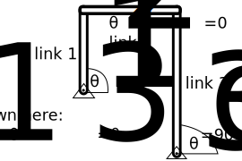

HW_03 - Nonlinear solutions¶

Creating a solution for the hanging chain, we reached a point where the constants required a nonlinear solution to an algebraic equation,
import numpy as np
import matplotlib.pyplot as plt
plt.style.use('fivethirtyeight')
\(y(x) = \cosh \frac{\rho g a}{2c} - \cosh\frac{\rho g x}{c}\)
\(L = \int_{-a/2}^{a/2}\cosh\frac{\rho g x}{c}dx \rightarrow L = \frac{c}{\rho g} \sinh\frac{\rho g a}{c}\)
The second equation does not have an “analytical” solution. Where “analytical” refers to an equation with seperable input/output. What you need is a “numerical” solution to equation 2:
what \(c\) will satisfy this equation?
\(f(c)=L - \frac{c}{\rho g} \sinh\frac{\rho g a}{c}=0\)
These problems often come up when engineering systems have large displacements or large rotations that cannot be ignored. One way to approach this problem is to guess the solution. You could try:
c= |
f(c) |
|---|---|
c=0 |
\(-\infty\) |
c=50 |
-0.022 |
c=100 |
0.07 |
c=200 |
0.09 |
If you happen to guess numbers that change the sign of \(f(c)\), then you know one interval where \(f(c_{solution})=0\) must have been true. I find it helps to plot the function to see where the solution may exist
g = 9.81
L = 1
a = 0.9
rho = 5
F = lambda c: L-c/rho/g*np.sinh(rho*g*a/c)
c = np.linspace(40,200)
plt.plot(c,F(c), label='f(c)')
plt.plot(c,np.zeros(c.shape), label='f(c)=0')
plt.legend()
plt.xlabel('c')
plt.ylabel('f(c)')
Text(0, 0.5, 'f(c)')
Numerical solution¶
We can use fsolve to automate the guess-and-check method. You need 2 things:
a function
f(c)that returns the result \(f(c)=L - \frac{c}{\rho g} \sinh\frac{\rho g a}{c}=0\)an initial guess,
c_0
Numerical solutions always require an initial guess for the solution and they will iterate until your function f(c_sol) \(\approx0\).
Note:
fsolvehas more advanced features than ‘guess-and-check’, but at its core it uses algorithms to reduce the number of guesses and checks.
Define f(c) with lambda¶
In Python, you can use the lambda function to create functions in one line. The other way to create a function is using def.
Note:
defis a much richer way to create functions in Python. We will use it later when we want more involved functions.
Here, you define the function f(c) with lambda:
g = 9.81
L = 1
a = 0.7
rho = 5
f = lambda c: L-c/rho/g*np.sinh(rho*g*a/c)
f(40)
0.21081614830202033
Solve f(c_sol)=0 with fsolve¶
The numerical solver, fsolve, is part of the scipy.optimize library. Import the function with the from…import-command.
from scipy.optimize import fsolve
Now, you can solve for the value of c_sol that creates a solution to f(c_sol)=0. Use the function, f and an initial guess, c0=40.
c0 = 40
c_sol = fsolve(f, c0)
print('c_sol = {} and f(c_sol) = {}'.format(c_sol[0], f(c_sol)))
c_sol = 22.671522641015084 and f(c_sol) = [1.62092562e-14]
Plug into catenary equation¶
Now, you have a solution for \(c\) that describes the hanging chain. Plug it into the original equation
\(y(x) = \cosh \frac{\rho g a}{2c} - \cosh\frac{\rho g x}{c}\)
and plot the final shape.
x = np.linspace(-0.9/2,0.9/2)
y = np.cosh(9.81*5*0.9/2/c_sol[0])-np.cosh(9.81*5*x/c_sol[0])
plt.plot(x,-y)
plt.xlabel('x-axis (m)')
plt.ylabel('y(x) - chain location (m)')
Text(0, 0.5, 'y(x) - chain location (m)')
Problem 1¶
Plot the solution for two hanging chains, the same as we did above:
\(g = 9.81~m/s/s\) \(L = 1~m\) \(rho = 5~kg/m\)
\(a = 0.9~m\)
\(a = 0.7~m\)
Problem 2¶

In the four-bar linkage show above there are 3 bodies moving in 2D (9 DOF) and 4 pins (8 constraints). The linkage configuration is constrained by the two nonlinear equations
\(l_1\sin\theta_1+l_2\sin\theta_2-l_3\sin\theta_3 -d_y = 0\)
\(l_1\cos\theta_1+l_2\cos\theta_2-l_3\cos\theta_3 -d_x = 0\)
If you have one of the angles,\(\theta_1\), you can use equations 1 and 2 to solve for the other two angles, \(\theta_2~and\theta_3\) using fsolve only now the input is a vector with two values and the output is a vector with two values.
\(\bar{f}(\bar{x})= \left[\begin{array}{c} f_1(\theta_2,~\theta_3) \\ f_2(\theta_2,~\theta_3)\end{array}\right]=\left[\begin{array}{c} l_1\sin\theta_1+l_2\sin\theta_2-l_3\sin\theta_3 -d_y\\ l_1\cos\theta_1+l_2\cos\theta_2-l_3\cos\theta_3 -d_x \end{array}\right]\)
The linkage system has the following properties:
link 1: \(l_1 = 0.5~m\)
link 2: \(l_2 = 1~m\)
link 3: \(l_3 = 1~m\)
when \(\theta_1=90^o\), \(\theta_2=0^o\), and \(\theta_3=90^o\). So the two grounded pins have a fixed relative position, \(r_{3/1} = d_x\hat{i}+d_y\hat{j} = 1\hat{i}-0.5\hat{j}\).
Below, the definition of Fbar is defined for \(\bar{f}(\bar{x})\) and the function is satisfied for \(\theta_1=\theta_3=90^o\) and \(\theta_2=0^o\). Then, the links are plotted with rx and ry, where
\(rx = \left[\begin{array}~0\\l_1\cos(\theta_1)\\l_1\cos(\theta_1)+l_2\cos(\theta_2)\\ l_1\cos(\theta_1) + l_2\cos(\theta_2)-l_3\cos(\theta_3)\end{array}\right]\)
\(ry = \left[\begin{array}~0\\l_1\sin(\theta_1)\\l_1\sin(\theta_1)+l_2\sin(\theta_2)\\ l_1\sin(\theta_1)+l_2\sin(\theta_2)-l_3\sin(\theta_3)\end{array}\right]\)
l1 = 0.5
l2 = 1
l3 = 1
a1 = np.pi/2
dy = -0.5
dx = 1
Fbar = lambda x: np.array([l1*np.sin(a1)+l2*np.sin(x[0])-l3*np.sin(x[1])-dy,
l1*np.cos(a1)+l2*np.cos(x[0])-l3*np.cos(x[1])-dx])
x90 = np.array([0,np.pi/2])
Fbar(x90)
array([ 0.00000000e+00, -1.11022302e-16])
rx = np.array([0,
l1*np.cos(a1),
l1*np.cos(a1)+l2*np.cos(x90[0]),
l1*np.cos(a1)+l2*np.cos(x90[0])-l3*np.cos(x90[1])])
ry = np.array([0,
l1*np.sin(a1),
l1*np.sin(a1)+l2*np.sin(x90[0]),
l1*np.sin(a1)+l2*np.sin(x90[0])-l3*np.sin(x90[1])])
plt.plot(rx,ry,'o-')
plt.axis([-0.5, 1.5, -0.6, 0.6])
(-0.5, 1.5, -0.6, 0.6)
Your goal:¶
Change the angle to \(\theta_1=45^o,~135^o,~and~180^o\). Plot the three configurations like above. Use fsolve to find \(\theta_2~and~\theta_3\).
# your work here